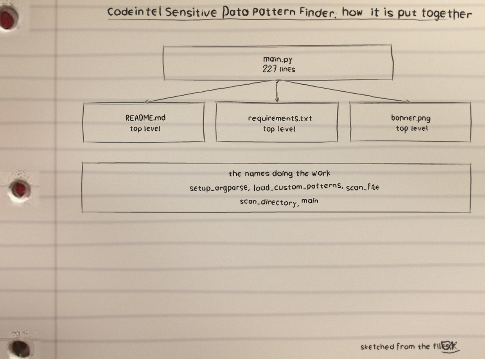
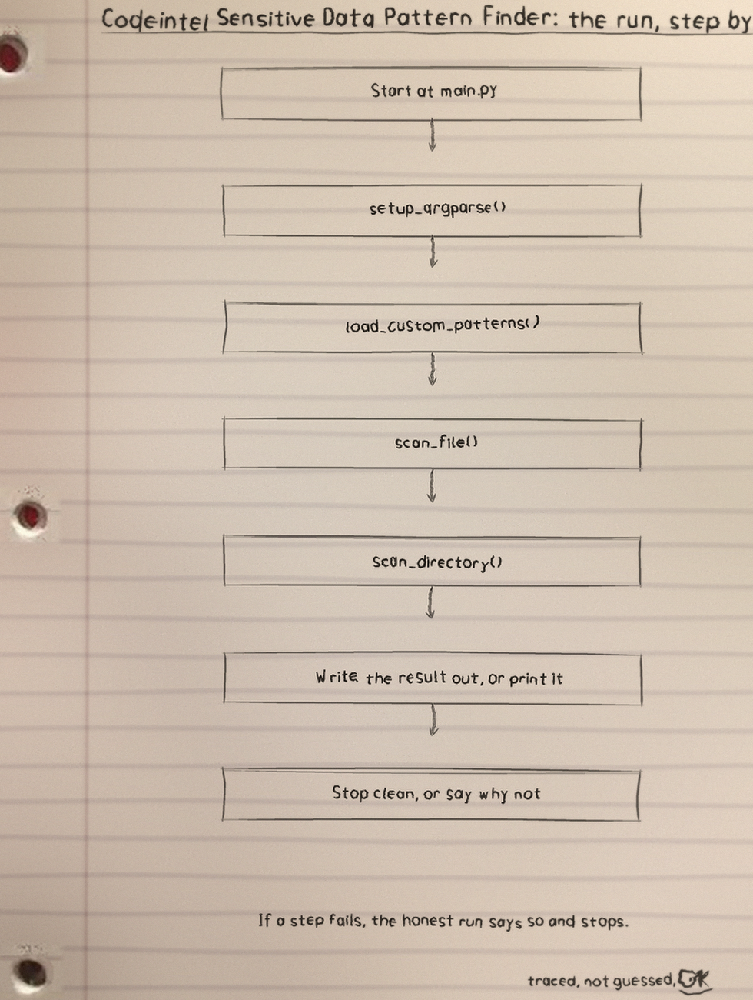
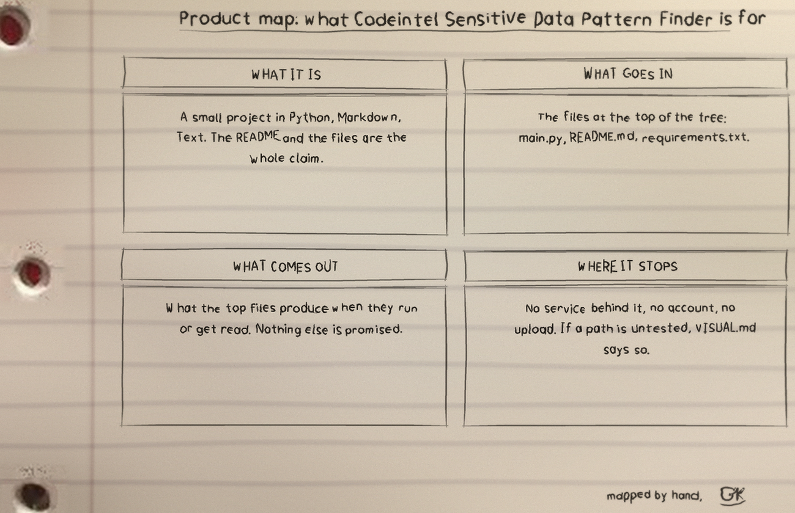

This tool scans files for five sensitive data shapes and prints every match in clear. Run it as python3 main.py PATH with one or more required positional paths, each a file or a directory. Options: -p naming a JSON file of custom patterns, -e taking comma separated exclusions, -r for recursion, -l setting the log level, and -o writing results to a file.
The five default shapes are a credit card run of thirteen to sixteen digits with spaces or dashes allowed (no validity check of any kind, so any long digit run qualifies), a social security shape of three, two and four digits, a loose API key run of 32 to 45 word characters, the AWS access key shape, and an email address shape.
The match itself is the report: it is printed to the console, written to the warning log, and appended to the output file, unmasked in all three places. That is the deliberate opposite of the masking its sibling scanner, codeintel-secrets-scanner, performs, which replaces reported values with ***. Custom patterns merge over the defaults, a same named one replacing its default and a new named one added beside them, and there is no way to drop a default pattern; a patterns file that cannot be loaded exits 1 rather than falling back silently. Exclusions test whether a path starts with or ends with an excluded string. The output file is truncated once at the start of a run. A run exits 1 when a named path is missing, when any file could not be read, or when any pattern fails to compile, and matches already found are still reported before it exits.
Recorded traps, preserved in the README: the clone URL and the closing licence line both use the unhyphenated ShadowGuardAI against the MIT LICENSE file; the usage line is a placeholder naming no path; and the parameter list omits the required positional paths and leaves -p, -e and -l undescribed though the code's help text describes all three.

Diagrams


